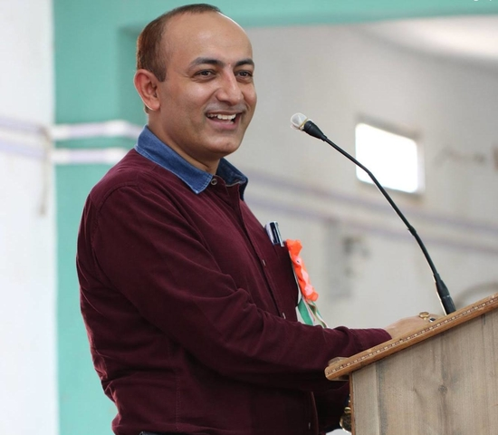
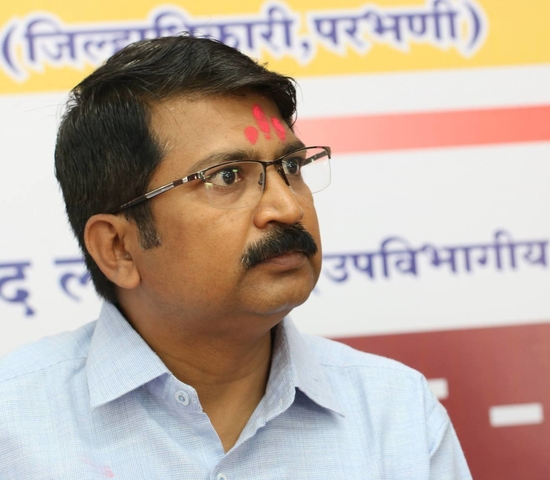

Yuvraj Sambhaji Raje Chatrapati
ग्रामीण भागातील समाजाच्या उन्नती साठी शिक्षणाचे महत्व ओळखून १९ व्या शतकाच्या सुरुवातीला राजश्री शाहू महाराजांनी विविध शैक्षणिक संस्था निर्माण करून भारतरत्न डॉ.बाबासाहेब आंबेडकर यांच्या सारखे असाधारण रत्न शोधून काढले.त्यांच्या पावलावर पाऊल ठेवत आज 'कर्तव्य फाउंडेशन' देखील या मराठवाड्यातल्या मातीत लपलेले माणिक-मोती शोधून काढत आहेत. गोर-गरिबांच्या मुलांना शिक्षणासाठी मदत करून गरीबीच्या अंधारात अडकलेल्या रत्नाना चकाकी देत आहेत. आम्ही राजश्री शाहूंचे रक्ताचे वारस आहोत, पण 'कर्तव्य फाउंडेशन' हे शाहू महाराजांच्या विचाराचे खरे वारसदार आहेत.
- युवराज संभाजी राजे छत्रपती,कोल्हापूर
(मार्गदर्शनपर भाषण २७ जून २०१५, परतुर)

Shri. Rahul Ranjan Mahiwal
Aadharwad is an organisation working for upliftment of the poor, marginalized and destitute. It aims at providing financial, educational and moral support to families of farmers and labourers. It is committed to the cause of social justice and enshrined in the constitution of India. Providing materials required for proper education and competitive insight to the wards of poor and orphan children has been one of it's prime focus.
I am sanguine the organization along with it's dedicated leaders will be working with same zeal and enthusiasm in coming years also. My best wishes to Aadharwad.
- Shri. Rahul Ranjan Mahiwal
(IAS, District Collector, Parbhani)

Shri. Arvind Lokhande
सर्व सामान्य माणसाच्या जीवनात अनेक प्रकारची संकट येतात. अश्यावेळी आपल्याला शासनाने मदत करावी असे प्रत्येकास वाटते. परंतु प्रत्येक वेळी शासन आपल्या मदतीला येईल याची खात्री नसते आणि ह्याचे एक प्रमुख कारण म्हणजे शासकीय मदतीचे निकष. मग अशावेळी त्या पिडिताला समाजातून तातडीने मदत मिळणे आवश्यक असते आणि नेमकी ही पोकळी 'आधारवड फाउंडेशन' ही सामाजिक संस्था भरून काढत आहे. संस्थेचे अध्यक्ष मा. श्री. श्याम वाढेकर हे वर्ष २००७ पासून 'कर्तव्य फाउंडेशन' च्या माध्यमातून अनाथ व गोर-गरीब विद्यार्थ्याना शैक्षणिक मदत करीत होते. आता 'आधारवड फाउंडेशन' च्या माध्यमातून त्यांनी त्यांच्या कार्याच्या कक्षा वाढवल्या व प्रामुख्याने संकटात सापडलेल्या शेतकरी बांधवांना मदतीचा हात पुढे करत आहेत. मराठवाड्यातील शेतकरी आत्महत्या ही सध्याच्या काळात भेडसावणारी एक प्रमुख समस्या आहे. ह्या विषयाची गंभीरता लक्षात घेऊन या संस्थेने २०१४ साली 'मिशन सेव्ह फार्मर' ह्या अतिशय महत्वपूर्ण मोहिमेची सुरूवात केली आणि मराठवाड्यातील अनेक आत्महत्या ग्रस्त शेतकरी कुटुंबांना पुन्हा त्यांच्या पायावर उभे केले.
आजही या परिसरात कुठे काही दुर्घटना घडली की सर्व प्रथम धावून जाणारी माणस ही 'आधारवड फाउंडेशन' चे कार्यकर्तेच असतात हे मी परतूर-मंठा तालुक्यात उपविभागीय अधिकारी म्हणून काम करत असतांना कित्येक वेळा अनुभवले आहे. समाज उपयोगी कार्य करणार्या अशा संस्थेच्या पाठीशी उभे राहणे व त्यांना सर्वोतपरी सहकार्य करणे हे समाजातील आपल्या प्रत्येकाचे कर्तव्य आहे. येत्या भविष्यात 'आधारवड' चा एक मोठा 'वटवृक्ष' व्हावा अशी सदिच्छा व्यक्त करतो.
- श्री. अरविंद लोखंडे
( उपविभागीय अधिकारी, परतूर )